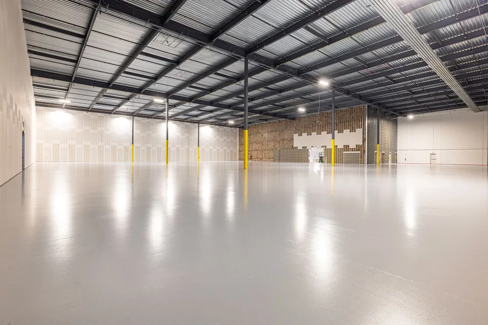
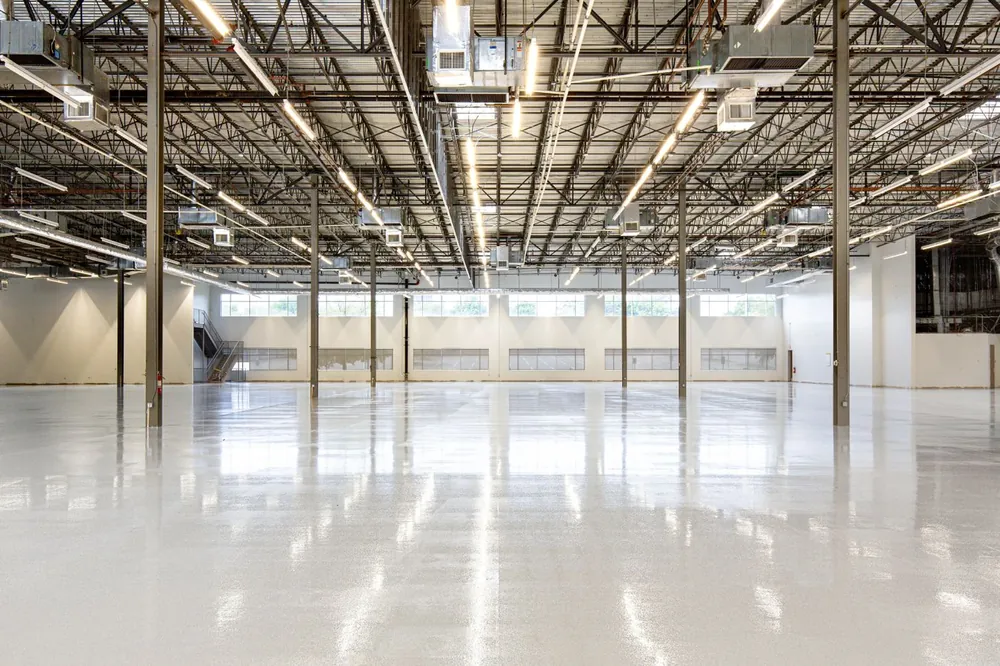
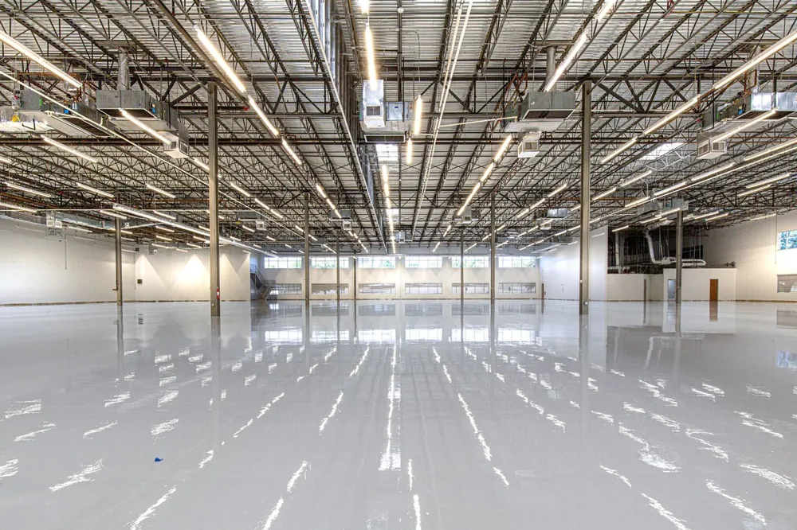

Warehouses, kitchens, shops, and showrooms — spec’d for what actually runs across the floor, and installed nights and weekends so you stay open.
Updated August 2026
Commercial epoxy flooring is a heavy-duty resin system built for floors that take abuse all day — forklifts, pallet jacks, dropped tools, hot oil, cleaning chemicals, and constant foot traffic. It's the same family of product as a residential garage coating, applied thicker and specified differently depending on what the floor actually has to survive.
We install commercial floors across the Omaha metro for warehouses and distribution space along the I-80 corridor, auto and truck repair bays, commercial kitchens, breweries and taprooms, medical and dental offices, and manufacturing floors. Each of those has a different requirement. A kitchen needs a sanitary, seamless surface that meets health inspection and won't turn into a skating rink when it's wet. A warehouse needs compressive strength and line striping. They are not the same job and shouldn't get the same quote.



Uncoated warehouse slabs shed fine silica dust that gets into product, packaging, and equipment. It's also a respiratory issue in enclosed spaces.
Delaminating patches are a trip hazard and only spread. Peeling almost always traces back to inadequate surface prep on the original install.
Cracked or porous kitchen floors hold bacteria and get flagged. A seamless coved system eliminates the seams inspectors look at.
Aggregate can be broadcast into the topcoat to raise slip resistance in wash-down areas, entryways, and anywhere grease reaches the floor.
Battery acid, coolant, and degreasers eat unprotected concrete. Once the surface is etched, it absorbs everything after that.
Traffic lanes, equipment zones, and OSHA striping can be built into the coating rather than painted on top where they wear off in months.
Downtime is usually the real cost of a commercial floor, not the coating itself. A $9,000 floor that shuts a shop for a week can cost far more in lost revenue than the invoice.
We schedule commercial work around your operation rather than the other way around. That means night and weekend installs for retail and restaurants, sectioning large warehouse floors so half the space keeps running while the other half cures, and using polyaspartic systems where the schedule is tight, because they cure fast enough to return a space to service the next morning.
Before we quote, we want to know your slowest days, whether you can move racking, and what the hard deadline is. A commercial quote without that conversation is a number pulled out of the air.
Commercial work in Omaha typically runs $4 to $9 per square foot, and larger floors price better per foot because mobilization and setup are spread across more area.
| Space Type | Typical Size | Typical Range |
|---|---|---|
| Small shop or office | 500–1,500 sq ft | $6 – $9 / sq ft |
| Restaurant or kitchen | 800–2,500 sq ft | $7 – $12 / sq ft |
| Warehouse or manufacturing | 5,000–20,000+ sq ft | $4 – $7 / sq ft |
Kitchens price higher because of coving, sanitary detailing, and drain work. Off-hours scheduling and heavy repair to a damaged slab also move the number. Every commercial quote we write is itemized so you can see what's driving cost.
We ask what runs across the floor before recommending a system. A brewery and a machine shop get different builds.
Nights and weekends so your floor gets done without closing your doors during business hours.
You get a line-item scope covering prep method, system, mil thickness, and markings before work starts.
Slip resistance, sanitary coving, and safety striping specified up front rather than added after an inspection fails.
It depends on the system and the square footage, but most commercial jobs return to light service in 24 hours and full service in 72. Polyaspartic systems cut that to roughly 24 hours end to end. For businesses that genuinely cannot close, we section the floor and work in phases, or install overnight. We build the schedule around your operating hours before quoting.
Yes, when it's specified properly. A commercial kitchen needs a seamless system with integral coving up the wall base, a slip-resistant aggregate in the topcoat, and correct detailing around floor drains. That combination is what health inspectors look for, because there are no grout lines or seams for bacteria to sit in. A plain smooth garage-style coating in a kitchen would be both a code problem and a slip hazard.
Usually, yes, by working in sections around it. Fully loaded racking cannot be ground beneath, so those footprints get masked and coated later during a scheduled move, or left as designated equipment zones. We walk the floor with you first and mark what can and can't be cleared, so nobody discovers a problem on install day.
Epoxy is thicker, harder, and generally cheaper per square foot, which suits warehouses and manufacturing. Polyaspartic cures much faster, stays flexible in temperature swings, and won't yellow under UV, which suits businesses that can't afford downtime or have daylight on the floor. Many of our Omaha commercial installs use an epoxy base with a polyaspartic topcoat to get both.
Yes. Lane markings, equipment zones, and OSHA-compliant safety striping are installed within the coating system rather than painted over the top, so they don't wear off under forklift traffic. Tell us your layout and we'll include it in the scope.
In a warehouse or shop environment, 10 to 20 years is realistic with a properly prepped and correctly specified system. Kitchens and wash-down areas run shorter, closer to 7 to 12 years, because of constant water and chemical exposure. The variable that matters most is surface preparation on day one, not the brand of resin.